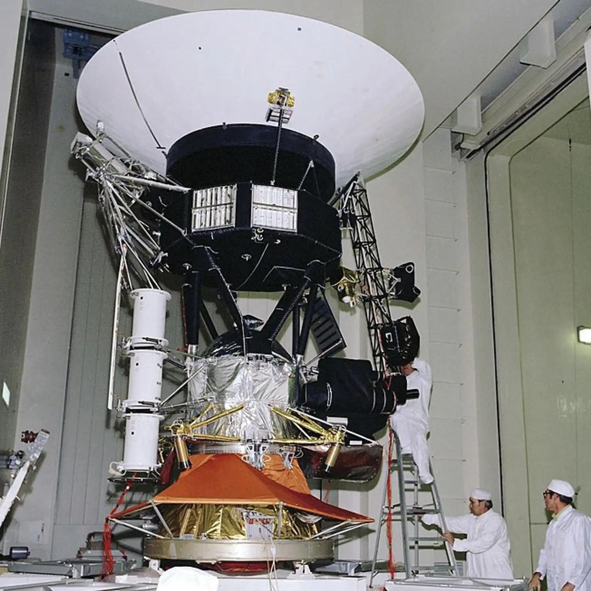

🌕 MISSÃO APOLLO 11
Sobre a missão
A Apollo 11 foi a missão responsável pelo primeiro
pouso tripulado na Lua, em julho de 1969.

🎥 Vídeo da Apollo 11
👨🚀 Tripulação
- Neil Armstrong
- Buzz Aldrin
- Michael Collins
📅 Informações da missão
| Informação |
Descrição |
| Ano |
1969 |
| Destino |
Lua |
| Tripulantes |
3 astronautas |
| Objetivo |
Pouso tripulado na Lua |
🔎 O que aconteceu?
- Lançamento da missão
- Viagem até a Lua
- Pouso lunar
- Atividades na superfície
- Retorno para a Terra
➡️ Próxima missão: Voyager
⬅️ Voltar para o início